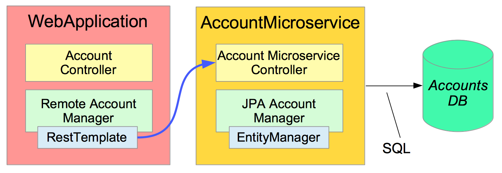

This lab refactor the MVC application to use a microservice.
RestTemplate
Estimated time to complete: 45 minutes
The original application was a simple, single process "monolith". It managed its own accounts database and fetched data directly.
We are going to refactor it into two processes:

The full system requires a discovery-server, making three processes in all:
Since you will be running (eventually) 3 applications at the same time:
Write the Discovery Server. RegistrationServer.java is the only file you need.
Follow TODOs 01-03 to make it into a Eureka Discovery Server running as a Spring
Boot application.
spring.config.name system property to define the YAML file it should use for configuration (refer back to the Spring Boot notes in your handout).RegistrationServer as a Spring Boot app and go to
http://localhost:1111 to view its Dashboard.AccountsMicroservice.java to be a Spring Boot application that
registers itself with the Registration Server.AccountsWebApplication.java as a micro-service client.
Note that TODO-11 is for information, there is nothing to do.RemoteAccountManager to access the Accounts microservice
using RESTful requests - you will need a RestTemplate to do the work.AccountsWebApplication.java and run it as a Spring Boot
application. Once it is up and running properly it will also appear in the
Registration Server dashboard - this may take a minute or so.Notice that setting up all three processes is a lot more complicated than running our original MVC application. But each process is actually very simple.
Congratulations, you have finished the lab.